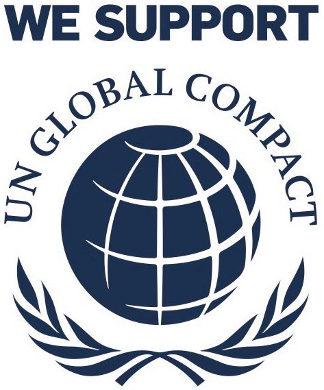
التزامنا بالميثاق العالمي للأمم المتحدةOur Commitment to the UN Global Compact
بوصفنا مشاركين أساسيين في الميثاق العالمي للأمم المتحدة منذ عام 2026، يلتزم مكتب ASK - عمرو سعيد قطب - علاء كمال يونس للمحاماة والاستشارات القانونية بمواءمة استراتيجيات المكتب وعملياته مع المبادئ العالمية لحقوق الإنسان والعمل والبيئة ومكافحة الفساد، واتخاذ الإجراءات التي تعزز الأهداف المجتمعية.As core participants in the United Nations Global Compact since 2026, ASK - Amr Saied Kotb - Alaa Kamal Younes Legal Advisors & Law Firm is committed to aligning the firm's strategies and operations with universal principles on human rights, labour, environment and anti-corruption, and taking actions that advance societal goals.
والميثاق العالمي للأمم المتحدة، الذي انطلق عام 2000، هو أكبر مبادرة للاستدامة المؤسسية في العالم، ويضم أكثر من 20,000 شركة مشاركة في أكثر من 160 دولة، منها 107 مشاركين من مصر، ومكتبنا واحد منهم.Launched in 2000, the UN Global Compact is the world's largest corporate sustainability initiative, with more than 20,000 participating companies in over 160 countries — 107 of them from Egypt, our firm among them.
رسالة الترحيبLetter of Welcome
«نُشيد بقيادتكم في اتخاذ هذا القرار، ونرحّب بمشاركة مؤسستكم في الميثاق العالمي، أكبر مبادرة للمواطنة المؤسسية في العالم، التي تضم آلاف المشاركين من قطاع الأعمال وغيرهم من أصحاب المصلحة من المجتمع المدني والعمال والحكومات في أكثر من 160 دولة.»“We applaud your leadership in making this decision and welcome your company's participation in the Global Compact — the world's largest corporate citizenship initiative, with thousands of business participants and other stakeholders from civil society, labour and government based in over 160 countries.”ساندا أوجيامبو، المديرة التنفيذية للميثاق العالمي للأمم المتحدة — 18 مايو 2026 (ترجمة من الأصل الإنجليزي)Sanda Ojiambo, Executive Director, United Nations Global Compact — 18 May 2026
المبادئ العشرة للميثاق العالمي للأمم المتحدةThe Ten Principles of the United Nations Global Compact
 حقوق الإنسانHuman Rights
حقوق الإنسانHuman Rights
- 1يجب على الشركات دعم واحترام حماية حقوق الإنسان المُعلنة دولياً.Businesses should support and respect the protection of internationally proclaimed human rights;
- 2التأكد من أنها لا تتواطأ في انتهاكات حقوق الإنسان.make sure that they are not complicit in human rights abuses.
العملLabour
- 3يجب على الشركات دعم حرية تكوين الجمعيات والاعتراف الفعلي بحق المفاوضة الجماعية.Businesses should uphold the freedom of association and the effective recognition of the right to collective bargaining;
- 4القضاء على جميع أشكال العمل القسري والإلزامي.the elimination of all forms of forced and compulsory labour;
- 5القضاء الفعلي على عمالة الأطفال.the effective abolition of child labour; and
- 6القضاء على التمييز في الاستخدام والمهنة.the elimination of discrimination in respect of employment and occupation.
 البيئةEnvironment
البيئةEnvironment
- 7يجب على الشركات دعم المقاربة الاحترازية تجاه التحديات البيئية.Businesses should support a precautionary approach to environmental challenges;
- 8المبادرة بتعزيز المسؤولية البيئية.undertake initiatives to promote greater environmental responsibility; and
- 9تشجيع تطوير ونشر التقنيات الصديقة للبيئة.encourage the development and diffusion of environmentally friendly technologies.
 مكافحة الفسادAnti-Corruption
مكافحة الفسادAnti-Corruption
- 10يجب على الشركات مكافحة الفساد بجميع أشكاله بما فيها الابتزاز والرشوة.Businesses should work against corruption in all its forms, including extortion and bribery.
المبادئ العشرة للميثاق العالمي للأمم المتحدة مستمدة من: الإعلان العالمي لحقوق الإنسان، وإعلان منظمة العمل الدولية بشأن المبادئ والحقوق الأساسية في العمل، وإعلان ريو بشأن البيئة والتنمية، واتفاقية الأمم المتحدة لمكافحة الفساد.The Ten Principles of the United Nations Global Compact are derived from: the Universal Declaration of Human Rights, the International Labour Organization's Declaration on Fundamental Principles and Rights at Work, the Rio Declaration on Environment and Development, and the United Nations Convention Against Corruption.
المبادئ العشرة في عملنا القانونيThe Ten Principles in Our Legal Work
حقوق الإنسانHuman rights
التقاضي والاستشارات في حماية الحقوق والحريات أمام القضاء الإداري والمحكمة الدستورية العليا.Litigation and advice on rights and freedoms before the administrative judiciary and the Supreme Constitutional Court.
العملLabour
تمثيل العمال وأصحاب العمل في منازعات العمل، ومراجعة لوائح العمل وسياسات عدم التمييز.Representing employees and employers in labour disputes, and reviewing work rules and non-discrimination policies.
البيئةEnvironment
الاستشارات في قانون البيئة والتراخيص البيئية والامتثال للمعايير البيئية.Advice on environmental law, environmental licensing and compliance.
مكافحة الفسادAnti-corruption
برامج مكافحة الفساد والرشوة، ومكافحة غسل الأموال، والعقوبات الدولية، وحوكمة الشركات.Anti-bribery and anti-corruption programmes, AML, sanctions compliance and corporate governance.
أهداف التنمية المستدامة السبعة عشر التي ندعمها وندعو لهاThe 17 Sustainable Development Goals We Support and Advocate
اضغط على أي هدف لقراءة صفحته.Tap any goal to open its page.

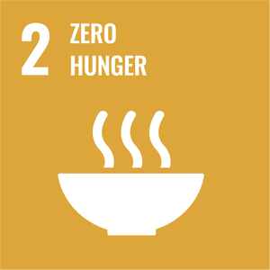
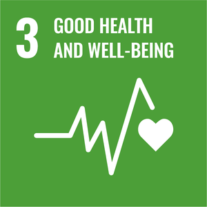


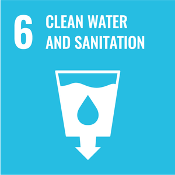
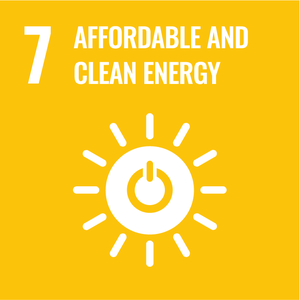
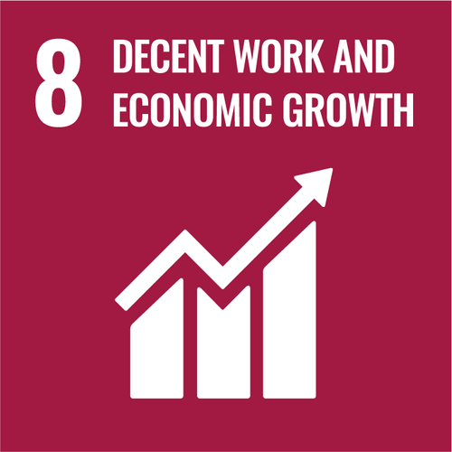
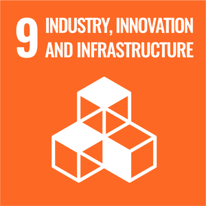
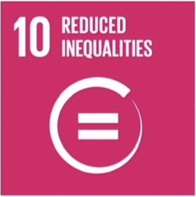
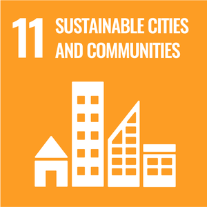
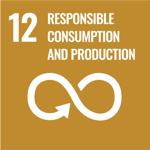
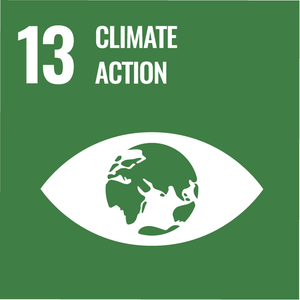
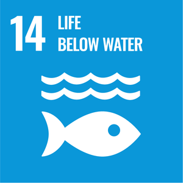
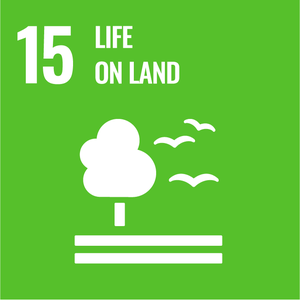

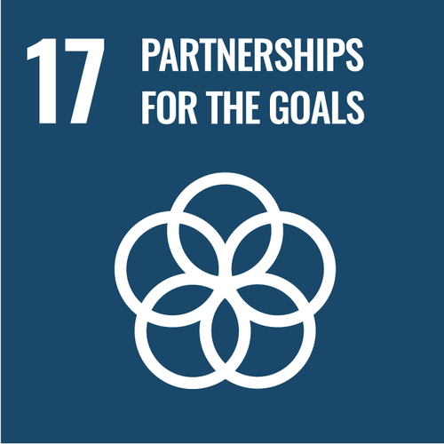

مكتب ASK - عمرو سعيد قطب - علاء كمال يونس يدعم أهداف التنمية المستدامة.ASK - Amr Saied Kotb - Alaa Kamal Younes supports the Sustainable Development Goals.
دعوتناOur Call
ندعم رسالة الميثاق العالمي للأمم المتحدة في حشد حركة عالمية من الشركات المستدامة وأصحاب المصلحة لصنع العالم الذي نريده.We support the mission of the United Nations Global Compact to mobilize a global movement of sustainable companies and stakeholders to create the world we want.
#UnitingBusinessالشفافية وتقرير التقدم السنويTransparency & Annual Communication on Progress

التزاماً بالشفافية، يقدّم المكتب تقرير التقدم السنوي (CoP) إلى الميثاق العالمي للأمم المتحدة، يستعرض فيه جهوده في تطبيق المبادئ العشرة، ويُنشر التقرير على صفحة المشاركة الرسمية للمكتب.Committed to transparency, the firm submits an annual Communication on Progress (CoP) to the UN Global Compact describing its efforts to implement the Ten Principles, published on the firm's official participant profile.